PART 0: Camera Calibration and 3D Scanning
Part 0.1: Calibrating Your Camera
In this section, we wanted to first understand the intrinsics of our camera. We used ArUco Tags as tracking targets. I took 56 images with my phone on the same zoom, with various angles and distance to get a diverse set of perspectives. When looping through each image, I extracted their corner coordinates and create corresponding known 3d corner positions, feeding everything into cv2.calibrateCamera() to estimate camera intrinsics and distortion.
Part 0.2: Capturing a 3D Object Scan
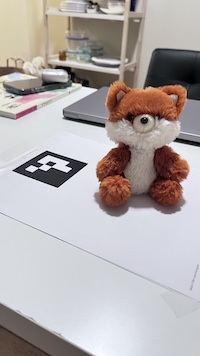
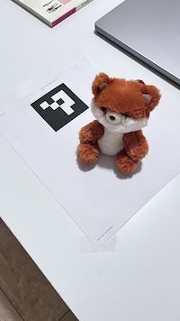
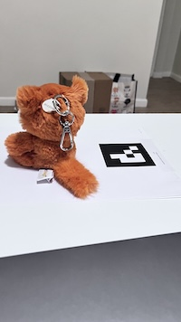
The above is my chosen object, placed next to a singular ArUco tag, again with various angles and distance.
Part 0.3: Estimating Camera Pose
In order to recover the camera poses for each image, I will be using Perspective-n-Point. After calibration, I can obtain the its intrinsic matrix and distortion coefficients, which is then used to match each known 3d-corner coordinate to its 2D pixel location. Each pair of correspondences are then passed into cv2.solvePnP to estimate the camera's rotation and translation. Visualizing all the poses together in Viser produces a 3D dome of camera viewpoints, which is displayed below. They are well spread out and covers majority of the angles.
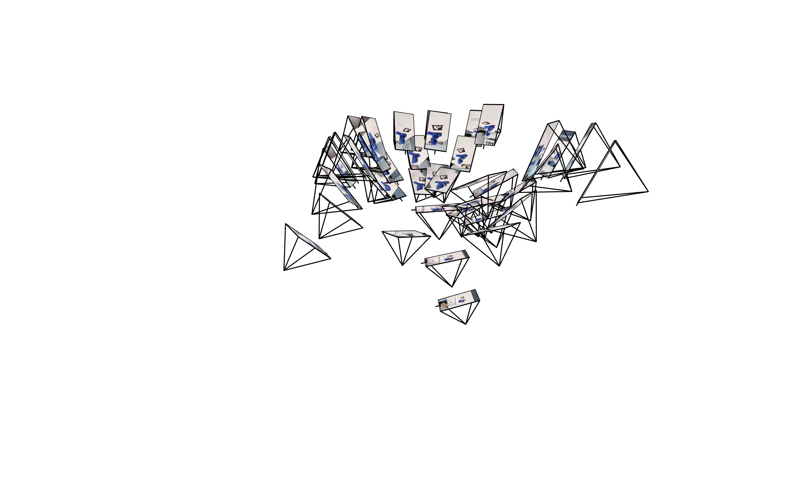
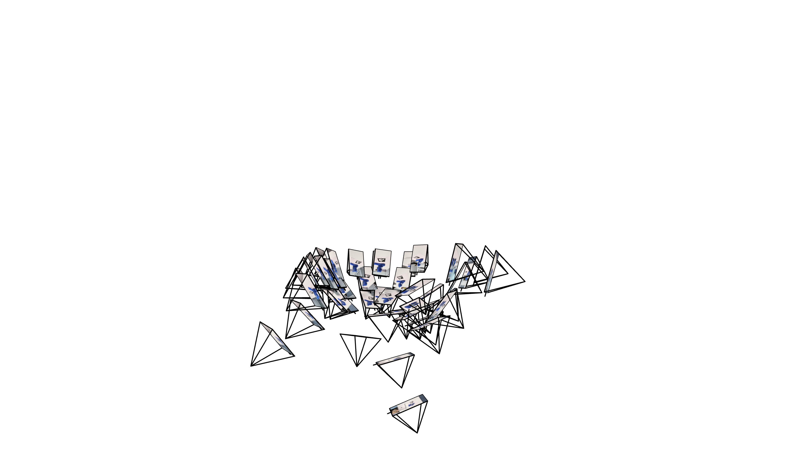
Part 0.4: Undistorting images and creating a dataset
Before I can train the NeRF, I undistorted the images with cv2.undistort() accounting for black boundaries, then saving the data in the following format:
- images_train: shape (N_train, H, W, 3) 80% of total
- c2ws_train: shape (N_train, 4, 4)
- images_val: shape (N_val, H, W, 3) 10% of total
- c2ws_val: shape (N_val, 4, 4)
- c2ws_test: shape (N_test, 4, 4) 10%
- focal: Camera focal length (float)
PART 1: Fit a Neural Field to a 2D Image
In this section, I will be fitting the NN onto the test image (fox) and my chosen image (lilies) as displayed below

The general work flow will be trying ot represent a 2D image using a Neural Field. To do so, I will be using the following Model Architecture:
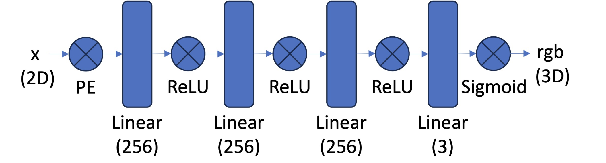
Start: 2D pixel coordinates (x, y)
Positional Encoding: Sinusoidal functions applied to the input cooridnates to expand its dimensionality
MLP: stack of non-linear activation and fully connected layers. As per the image, we are going to be using a series of alternating
Linear and ReLU layers, and then ending with a Sigmoid layer to limit the output pixel color in the range of (0, 1).
In addition, some key details:
1. Number of layers = 3
2. Batch Size = 10,000
3. Learning Rate = 1e2
4. Optimizer = Adam
5. Iterations = 5000
Below the training progression for the test image, using L = 10 and W = 256
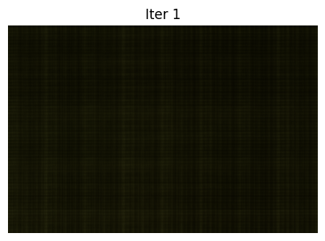
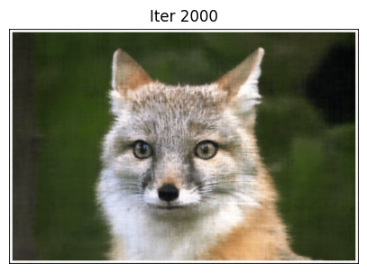
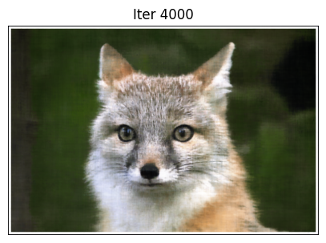
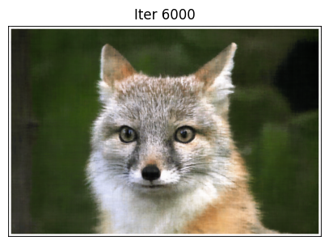
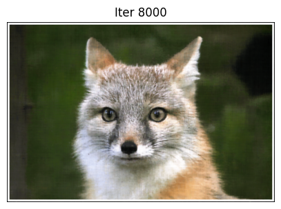
Below the training progression for my image, using L = 2, W = 16.
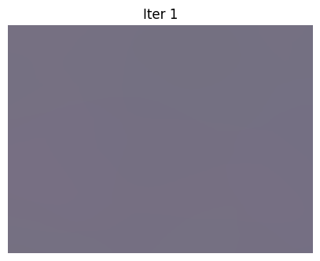
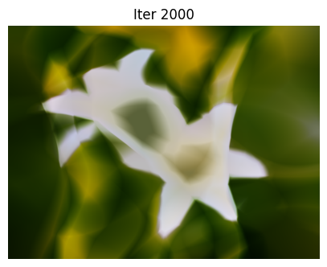
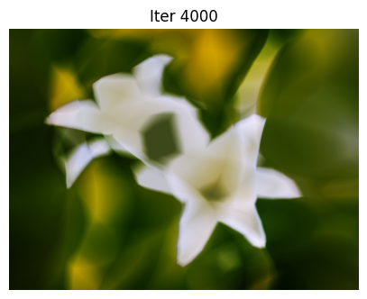
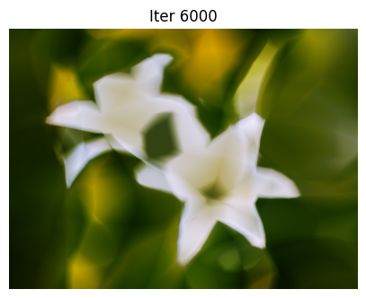
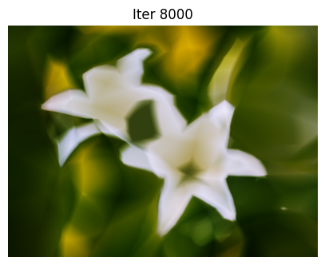
Exploring difference when varying L and W for the test image.
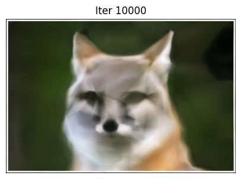
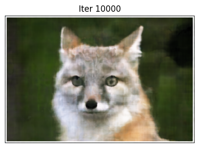
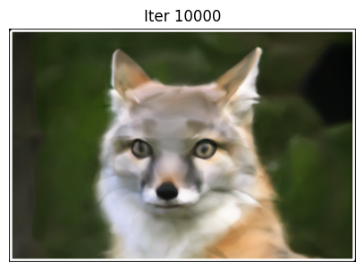
Exploring difference when varying L and W for my image.
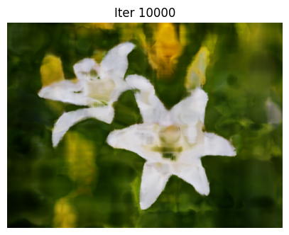
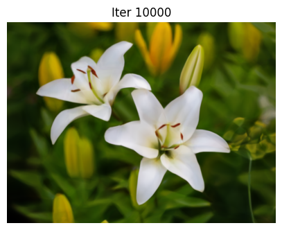
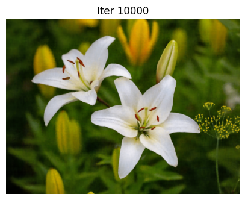
Below is the graph for PSNR of the test image and my chosen image.
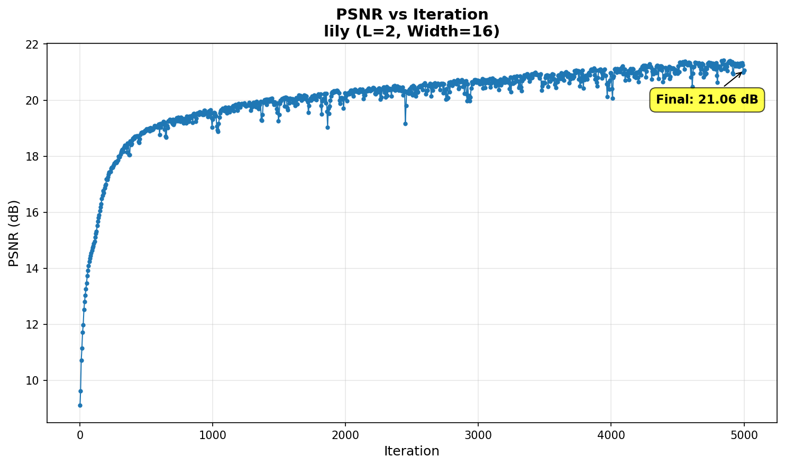
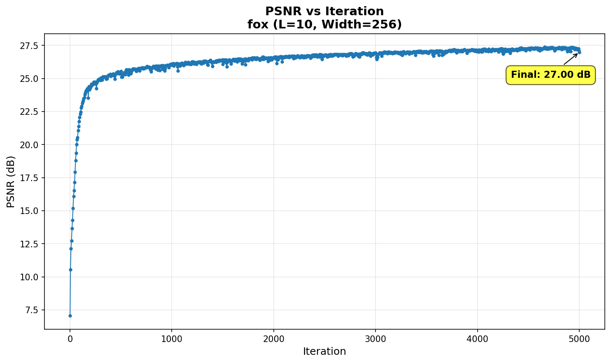
PART 2: Fit a Neural Radiance Field from Multi-view Images
2.1: Create Rays from Cameras
Camera to World Coordinates Conversion
I used a simplied version of the matrix equation to implement this part. The w2c contains a rotation matrix and
a translation vector, which can be separated. The rotation matrixes are orthonormal and the inverse is just their transpose
so the reverse mapping can take the form of $X_w = R^T(X_c -t)$, which is the way my function works for batch and
singular points.
Pixel to Camera Coordinate Conversion
For this section, I followed the matrix-vector equation and rearranged it to solve for camera coordinates.
Here, we just need to multiply both side by the inverse of K_matrix. Again, I modified it to work for batch
and singular coordinates.
Pixel to Ray
We know that a ray can be defined by an origin vector and a direction vector. The origin vector is simply the location in the world, which we can get
from a combination of the above 2 functions (Pixel -> camera -> world), with the translation vector (isolated through K) being the camera origin. Then apply the formula
described in the specs to find the normalized ray direction, which is the difference between the current world coordinate and r_o divided by the L2 norm of the difference.
2.2: Create Rays from Cameras
Sampling Rays from Images In this section, I chose to write a sampling function that flattens all pixels, and does a global sampling. The main issue here was to get the right index from the image level to the H,W of each image. Sampling rays from images is very similar to part and the samples are all randomly chosen. Here we just need to make sure to add 0.5 so that our pixels are represented by their centers.
Sampling Points along Rays This section invovled a bit more math, where I had to account for perturbance. For just the sampling part, I had to get evenly discretized chunks of the ray before sampling. To do so, I was able to various useful numpy functions to easily like linspace to do so, and then at every chosen point, add a little perturbance (some small random amount) so that every location is touched along the ray.
2.3: Visualization
To confirm the above approaches, I visualized the rays from the sample data.
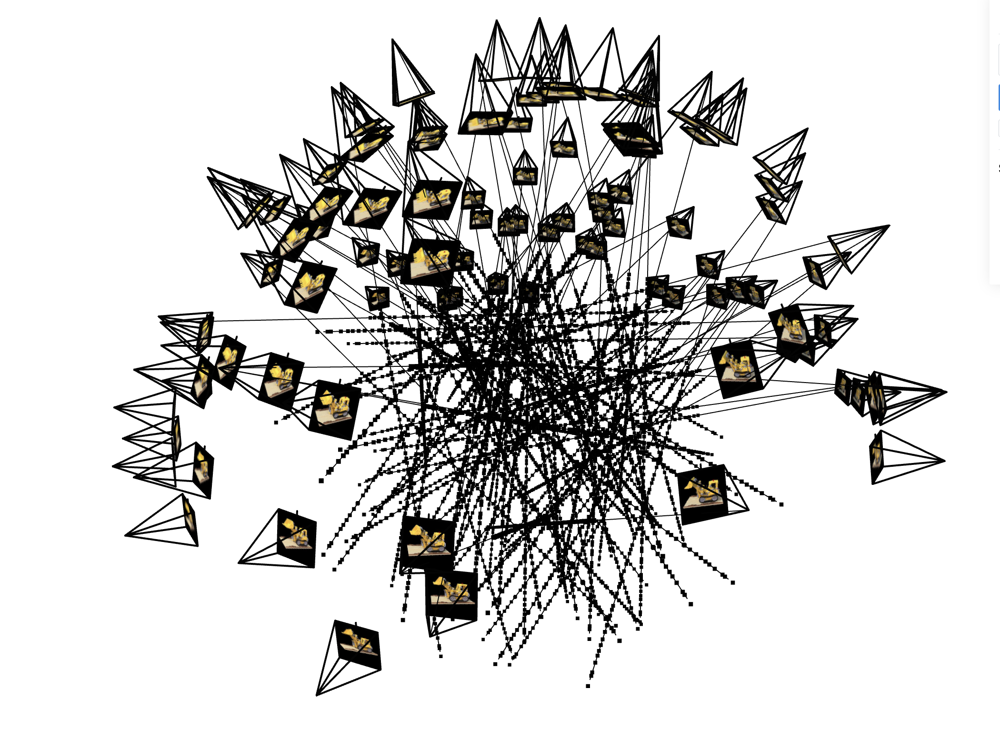
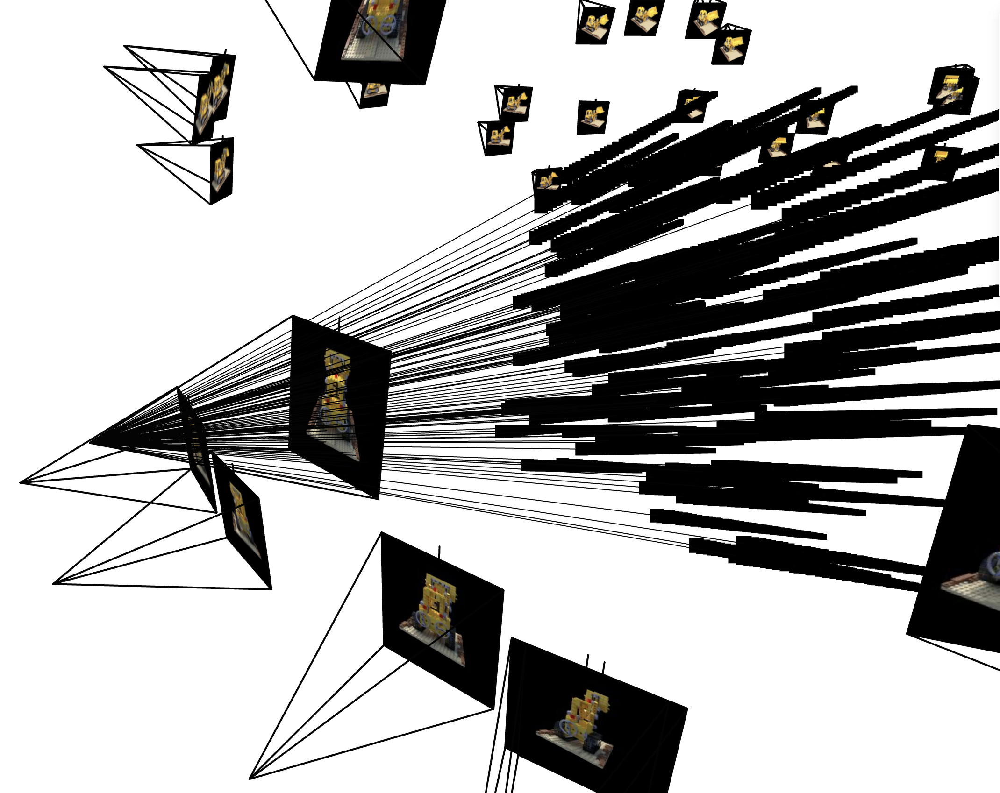
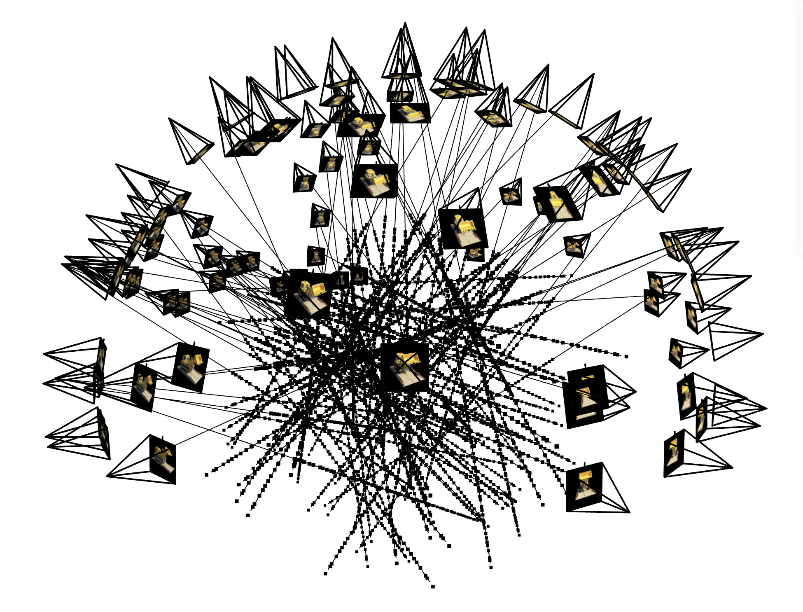
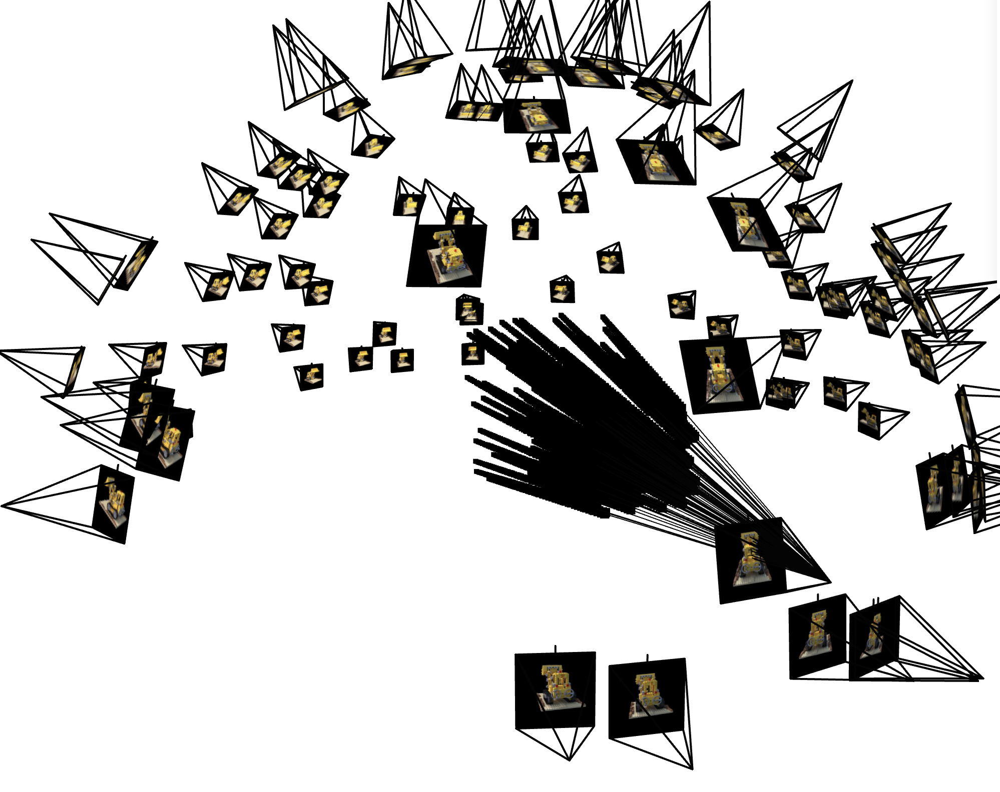
2.4: Neural Radiance Field
Here we are building a neural network similar to what was done earlier in part 1, but because we are injecting
the Positional Encoder, we need to break up the layers. Instead of directly make an nn.sequential, here, I made a class
that defined each section (before and after each PE point).
The overall structure of the NN is as follows:
1.input: 3D coordinates (L=10), direction (L=4)
2.first layer: alternating Linear and ReLU layers (input dimension = 60, hidden dimensions = 256)
3.middle layer: similar structure to first layer with PE concatenated so that our model remembers the input features
4.density layer: linear to ReLU that reduces the dimensions from 256 -> 1 and ensure positivity
5.color layer: reduced from 256 -> 3 dimensions for color using Linear, ReLU, and Sigmoid (at the end we get the normalized version)
6.output: density (1D), color (3D)
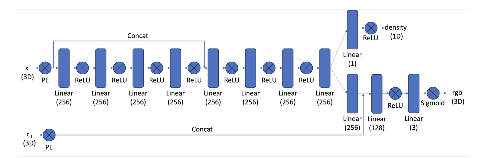
2.5: Volume Rendering
Since we are getting a density and color for each sample point (as shown by the architecture above), the volume rendering combines them into a final pixel color. At each step, the predicted density and RGB combines to form the color that probably would be seen, and the opacity is dependent on how likely, and we add each contribution to yield the final color. A perfect sum would be infinitesmally small steps, but I will be using the discrete version of the equation.
After finalizing all the functions, I first trained my model on the lego images. The below is the progressive training image as I go through the iterations.
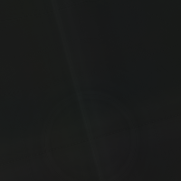
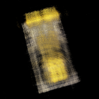
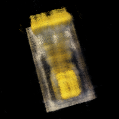
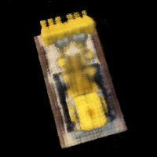
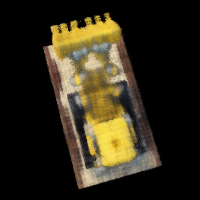
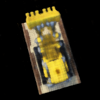
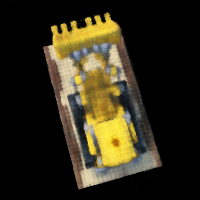
The graphs below demonstrate the training learning curves, including loss and psnr. The goal is too reach a PSNR of above 23, which marked by the red threshold line in the graph below for PSNR.
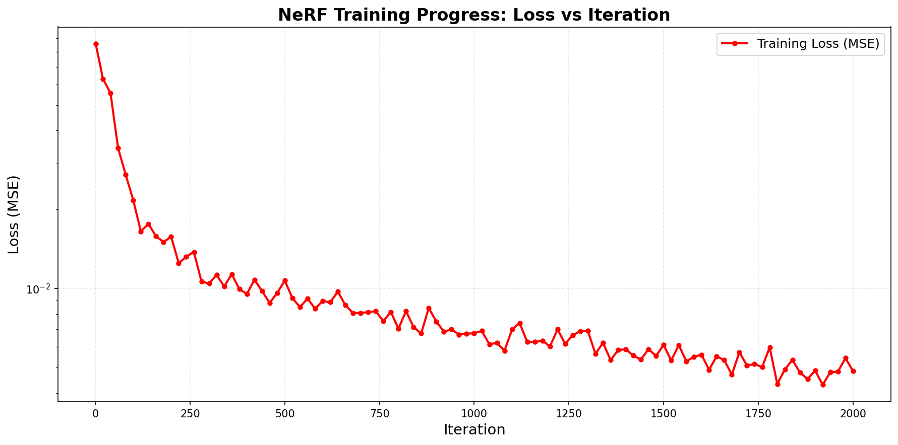
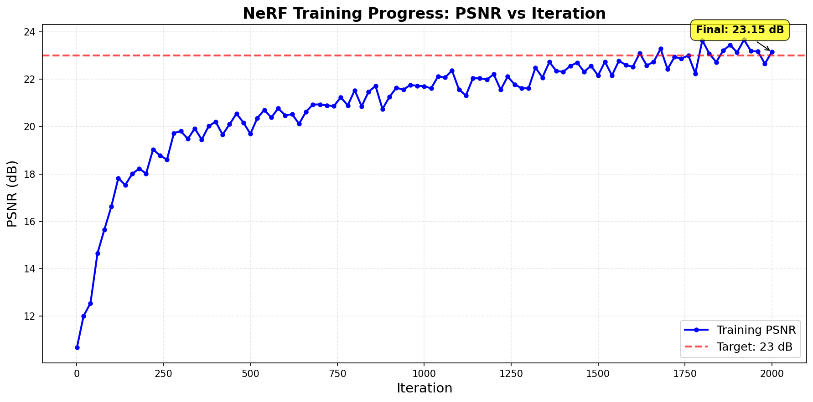
Finally, the gif rendering of the object itself.
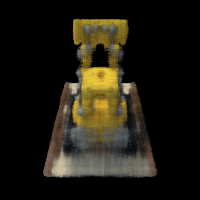
PART 2.6: Training with My Own Data
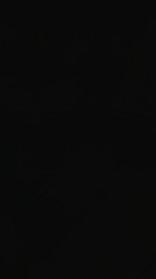
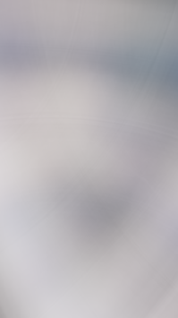
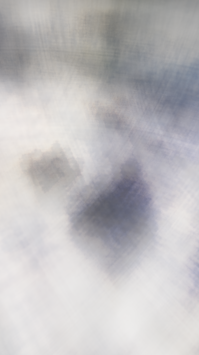
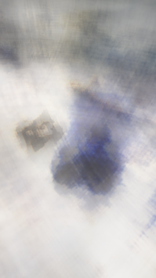
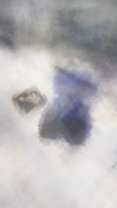
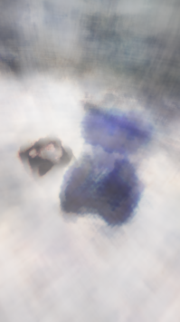
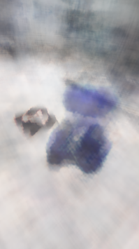
My gif (only 4 frames so it is really fast ....)
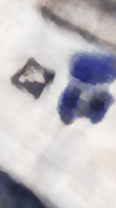
The training loss and PNSR results
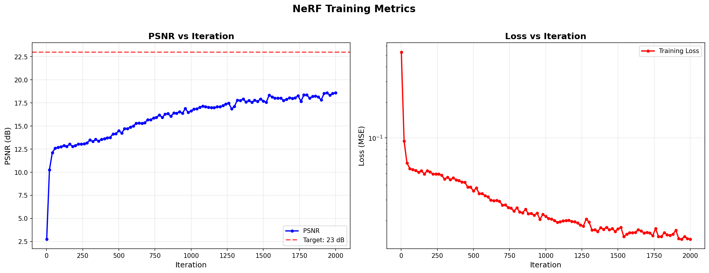